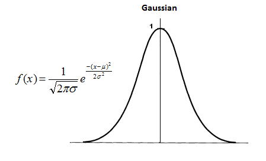

First it is important to say that this stage of my dissertation is the best that I've been because crucial decisions will be taken. One clear example of that, is the next stage of the architecture - referee stage - yes, a stage and not a node because there will be more than one node on that. For me the architecture core is here and the most important detail of this stage is its goal: to draw a probabilities map. But how? The first idea that showed up is based on Math and it consists of transforming the treated images into gauss functions. For example the guide line (line between the two lines detected) is the one that is the most likely (the function's peak) in terms of making part of the road. Then, for example, the detected lines (right and left) are those that might be one +/- standard deviation. After that, it is necessary to sum all of the gauss functions to obtain one with the probability density.
However this seems to be a little complicated to implement. Due to this, the second idea came and is the one that I like more. The procedures start by merging the "n" treated images' data that came from the detection algorithms. After that, the road area is painted which is confined by the two lines that are detected. Next, the merging of the images is done in order to get the intersected (safe zone) and non intersected regions. So, the objective is to apply a filter on the image pixels, which returns how many pixels are in the safe zone and this number divided by the filter size gives a probability. This will give rise to the probability map.
The current state of the architecture is showed on the video below:
To obtain this I simulated a second algorithm, which in fact is equal to the first one that was found but with different parameters.